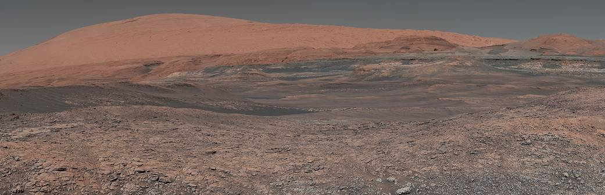
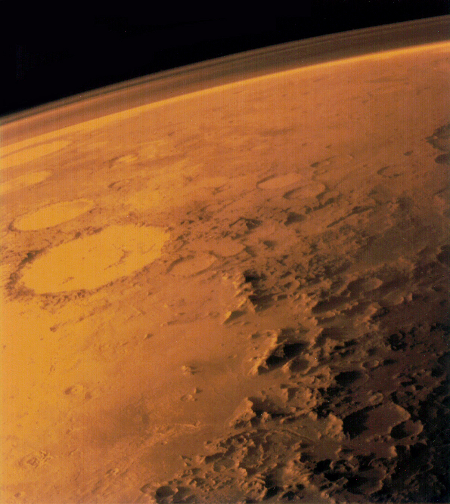
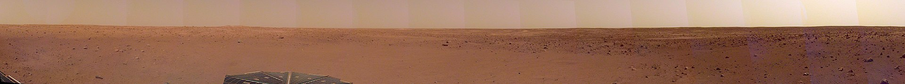
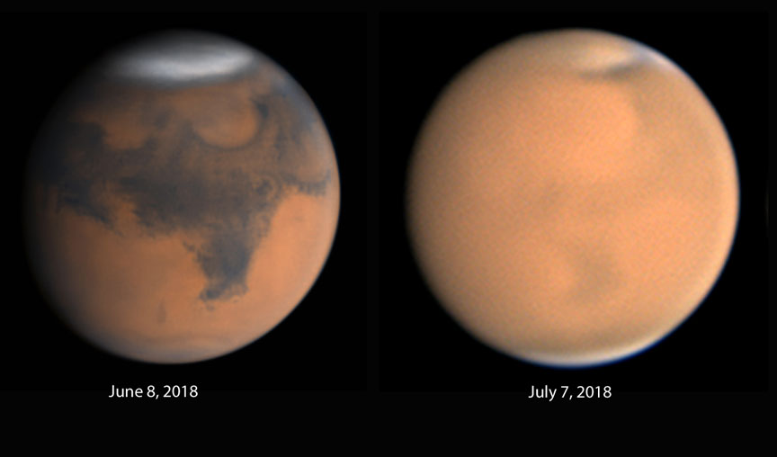
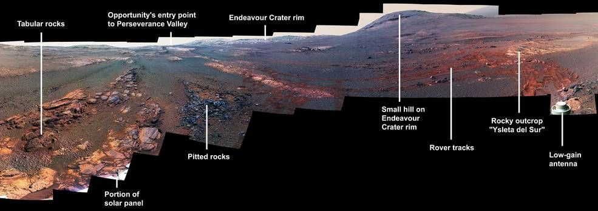

Where music meets science
| Main | Contact |
|---|

Earth: There is a saying shared across the universe.
Planet 3627-7 is a special world. It is a liquid world that fills up three fourths of its mass with water, yet sustains billions of species of creatures. Its residents live on the tallest peaks of the coldest mountains, to the hottest plains of its barren deserts, and into the depths of its oceans. It is a world filled with an array of color unlike any other planet in its solar system. The firmament protects it from the radiation of the sun. Frozen water falls from the sky like fine white dust for a quarter of a cycle. It is filled with these things called trees that release gases that sustains life in its atmosphere, and that it is a world filled with creatures as tall as the trees and as small as the pebbles on the ground.
It is said that the world’s rulers, creatures called humans, are the oddest of all. They live with plants and beasts that can kill them, but they have dominion above them all. They breathe in gases that burn them slowly in the inside at the rate of about 80 cycles around the sun. They have created settlements where temperatures dip to as low as -100 degrees and as high as 50 degrees and still reproduce. They capture the wind in the sails of their contraptions and journey across the waters. They then take the wind as their own and fly above the sky, defying their planet’s own gravity. The sun’s solar winds hit its atmosphere but instead of fearing it, they stare in awe at the lights they have named Aurora Borealis. As daylight in the night, these northern lights weaved amongst the silver clouds in a hypnotic dance, distorting in an array of green and purple with tongues of reds and oranges flickering in between.
But they were not satisfied with the sky. These humans decided to venture out of their world and into the outer space, touching upon their moon and sending their metal creature into the depths of the universe light-years away, seeking others like them – hoping to find a connection – hopelessly lost. But the universe kept silent.
But the universe speaks of them. They speak of the terrible and marvelous things of the complex planet. The planet these humans call Earth.
Earth, our home. Our only home. Our entire history is written on the surface of this miniscule blue globe. She has been taking care of us for millions
of years. Writing a music for something that encapsulates so many thing people can relate too is possibly one of the most challenging aspect of this
project. The way I approached this is to capture the essence of sounds we are familiar with through use of synthesizers and acoustic sounds sampling.
For example, the sound of white noise could represent a number of things, waterfall, wind, the rustling of leaves, ocean waves, etc. Of course, pure white noise
would not sound so good without proper manipulation, so, that will be part of the process as well.
The use of synthesizers in this piece is to bring the sense of being similar, yet not entirely so; an aural uncanny valley. Had I used
an entirely acoustic sounds, the elements of this piece would sound too familiar, people would recognize immediately where to place the
sounds in their perceived reality. What I intend for this piece is to bring the listener out of their reality and to look at Earth the same
way we look at other planets; the marvel she holds and her fragility. The writer of the story for Earth has perfectly captures the essence of
my intention in her beautifully written work on the left.

Mars:
The year is now 34 AE (After Earth). Humanity has lost its planet and has been travelling through space in search of a new home. The AD millennia ended with entire civilizations crumbling into dust and its population annihilated to a mere quarter of 7 billion. Once a planet brimming with life, it is now a skeleton of its former glory.
Three large aircrafts approach upon the red planet of Mars – once a twinkling red dot in the night sky is now a looming orb of a second home that is as unwelcoming as its barren landscape.
Touching upon the desert sand, heartbeats are loud against the whispers of the storm.
They shiver at the sight of a cold, dead vast expanse of rocks on the dusty surface. Their steps are light and they float through the air just by a brush of a footstep. As one, they venture into uncharted territory, blinded by the winds of the storm and the dust that dances across their vision.
People huddle together for comfort as they walk towards a peak that touches the scarlet skies of its toxic atmosphere. It is Olympus Mons and it rises as a beacon of shelter. There is a settlement by their predecessors and they must arrive before the setting of the sun. As they reach the foot of the mountain, they see the shadows of the very first explorers from Earth standing side by side, their solar panels glinting in the light, and there humanity is reminded of one's own inquisitive nature.
Opportunity and Curiosity.
The space race to send people to Mars has never been more fierce, with  private companies such as Blue Origin,
SpaceX, Boeing, etc. working closely with government space agencies around the world to plan out our species' next biggest step.
private companies such as Blue Origin,
SpaceX, Boeing, etc. working closely with government space agencies around the world to plan out our species' next biggest step.
In our effort to establish the second human colony on Mars, not only do we have to solve engineering problems, but argricultural, geological, medical, psychological, and many more
aspects as well. To build a self-sustainable colony on Mars, we have to ensure that it is able to cater for itself (it would take
too long for Earth's resource to reach Mars) when it comes to resource, be it for humans or machines. Therefore, in the not-so-far-away future,
not only will we need engineers and scientists on Mars, but teachers, gardeners, musicians, artists, construction workers, doctors; people from all
facets of life will have to work hand-in-hand to fulfill the goal of humankind becoming the true space-faring species.
It is also exciting to see what Earth could benefit from such technological advancements; how we can apply those tech to help us improve
the quality of our first home.
For Mars, I intended for the soundscape to exude somewhat of an eerie, and bleak atmosphere. The accompanying story depicts a scene where
humans slowly evacuate from the dying planet Earth. As they approach the looming red planet, several thoughts pop up in their heads, from
the scarcity of resource to the vast and empty inhabitable landscape on which to become their new home, most likely until their last breath.
The musical elements are a constant heartbeats, a human element, against the background of uncertain Mars elements, ranging from
the scratchy dust-wind, to the haunting cry of the far-away storm hovering in the lower atmosphere. It is a sonic juxtaposition of human against
nature on this dead planet.

From massive wildfire disasters to the melting of the polar ice caps, the evidence for climate change has never been more apparent,
yet there are still some people that refuse to accept human's influence over the sudden rise of global temperature.
If we let this type of ignorance run free, eventually, habitable moons and Mars won't be there to be our second home but rather, the
on home we will have left.

In the night sky, Mars is the third brightest planet behind Jupiter and Venus. It appears as a orange-red-hued bright dot in the night sky close to Saturn, Jupiter and the star Antares. With a good enough home telescope, we can
see very fine details on Mars, even its ice caps. 
Observed my many civilizations throughout the history, Babylonians, Chinese, Egyptians, Italians, Greek etc., with first telescopic observation by Galileo Galilei. Humans' interest in this planet has always been nothing but strong, and even
more so when we have deduced from the centuries of information that Mars could potentially have harbored life in the past, and how similar it used to be to our own planet.
The reddish hue on Mars is a result of rusty dust suspended in the atmosphere; however, a closer inspection of the planet would reveal that the surface is more orange-red rather than the strong reddish hue depicted in many
oversaturated photos on the internet.

The rust in the atmosphere comes from the oxidized iron on the surface. The iron oxide, which is the same compound that gives blood its red color, when
interract with oxygen, appears red as it absorbs blue and green spectrum of light.
We don't know, however, whether the rust on Mars occured due to rainstorms in the past, when Mars was still a young and rather wet planet,
or is it a gradual process of the rocks interraction to the Martian atmosphere over billions of years.
One of the most concerning aspect of living on Mars lies in its nothingness. On Earth, most of our agricultural activities are done outdoors; grow crops, livestock, etc. But on Mars, its surface is a true rocky desert of nothingness, we will have to engineer our ways through the myriads of problems facing a true self-sustained colony; namely, how can we make sure that the colony will have a constant supply of Energy, how do we keep the few first generations of people sane, how do we grow food, how do we get water, etc.
Without air and most likely, a limited supply of oxygen at first, taking a walk outside would be out of the question. The temperature outside is a freezing minus 60 degrees with only 0.1% oxygen in the atmosphere. Mars dust is also recognized to be harmful to our respiratory systems. The biggest challenge of Mars therefore lies not only in how to get there but how to “stay” there.

We have learnt about Mars’ storm the hard way when the probe Mariner arrived at Mars in 1971 expecting to see new fine details of this planet’s surface. What we got instead was a storm that covers virtually the entire planet that lasted for a month.

The dust storm on Mars contain dust particles that are much finer than on Earth.
All equipment must be specially engineered to be functional for a sustained period in such condition, such as NASA’s rovers.
Mars has a relatively thin atmosphere of 1% of Earth’s atmosphere, so storms of Mars would be comparable to a light breeze on Earth.
However, Mars is still a very “dusty” place, and this could pose several problems in the long run such as blocking the sunlight from the solar panels,
thus decreasing the power output significantly.
The gravity on Mars is about 3.711 meters per second squared, in other words, an object falling at Mars would see an increase in its speed by 3.711 m/s every second.
In comparison, Earth is about 9.807 m/s^2. A person weighs 100kg on Earth would only weigh around 38kg on Mars.
Though we might not be able to jump as high as portrayed in the film John Carter, a realistic height of 2.64 jump still sounds rather fun.
 With gravity even fewer than half of Earth’s, astronauts on Mars would have to work hard to prevent muscle atrophy.
Though it will definitely not be as bad as their spaceflight to the planet will have been,
living in such condition for a long period of time could bring about several medical conditions.
With gravity even fewer than half of Earth’s, astronauts on Mars would have to work hard to prevent muscle atrophy.
Though it will definitely not be as bad as their spaceflight to the planet will have been,
living in such condition for a long period of time could bring about several medical conditions.
 Olympus Mons is the tallest mountain found anywhere in the solar system, towering over even our Mount Everest and Mauna Kea.
Its diameter is around the size of an entire country: 624 km, and a height of 24 km.
In comparison, the cruising altitude of a commercial airplane is around 7 km.
Olympus Mons is the tallest mountain found anywhere in the solar system, towering over even our Mount Everest and Mauna Kea.
Its diameter is around the size of an entire country: 624 km, and a height of 24 km.
In comparison, the cruising altitude of a commercial airplane is around 7 km.

Though not the first rovers to have landed on the surface of Mars,
Curiosity and Opportunity were the true first explorers by merits.
Surface photos and details collected by these two were priceless.
Opportunity, after having travelled over 40 kilometers, had unfortunately failed,
and stopped responding during a heavy dust storm in 2018 and has taken a last parting panorama shot below,
with Curiosity still functioning and going strong in 2020.

Neptune: foo main foo
foo additional info foo